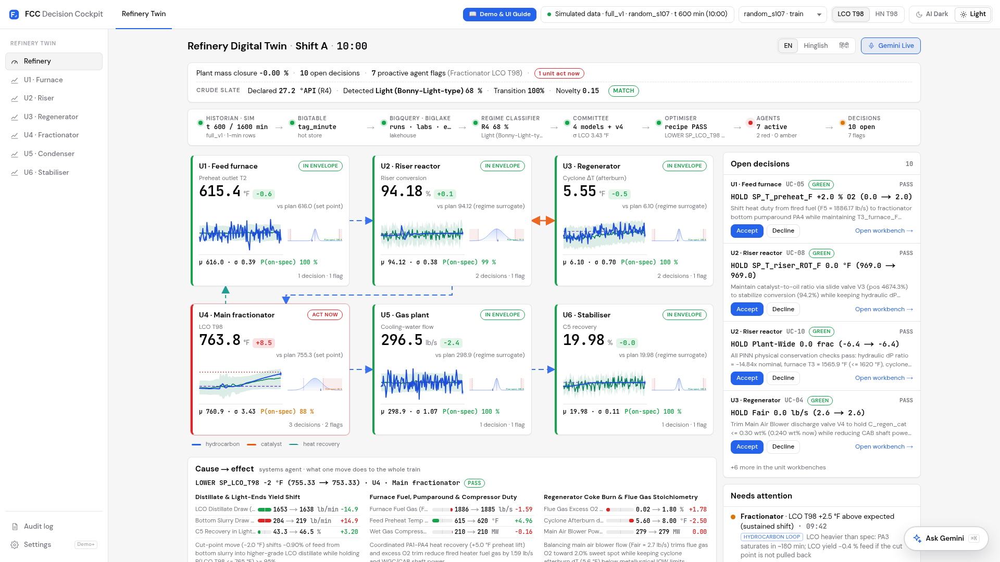

Live agent demo//FCC AGENTIC OPTIMISATION
Follow the oil. One explained decision at every stop.
The FCC turns heavy gas oil nobody can sell into petrol, diesel and LPG. The crude changes every day or two and the lab reports every eight hours, so six connected units are steered half-blind. Agents watch every minute, explain each move and its knock-on effect — and an operator approves.

U4 · Main fractionatorLIVE MODEL
The agent advises

Launch the live FCC cockpitCloud Run · Google sign-in · Ask Gemini inside▶ Demo video ↗ · Live app ↗
Launch demo ↗Product quality estimated by four models, including a physics-informed one — not waited for from the lab.
14 min
To name a crude switch and re-weight the models for the new feed (15 of 15 held-out switches caught).
“Not yet”
When the models disagree by more than 14 °F, it holds the move and asks for a lab sample instead of guessing.
0 writes
Advisory only: no path to the DCS. A person accepts, holds or declines, and every decision is recorded.
Demo on simulated data from a peer-reviewed FCC simulator (Santander et al., 2022). Tags show which outcomes come from live models and which are scripted for the demo.